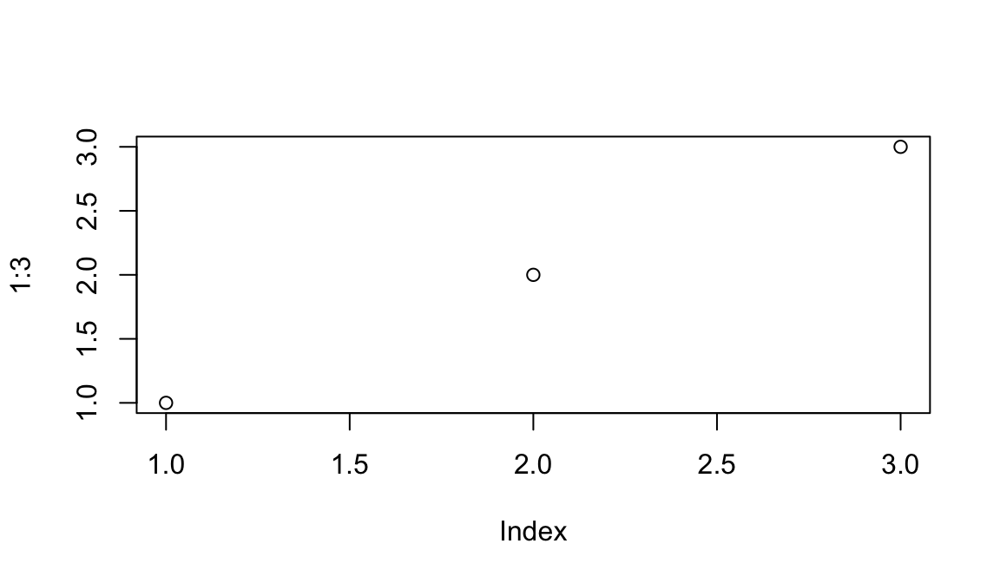
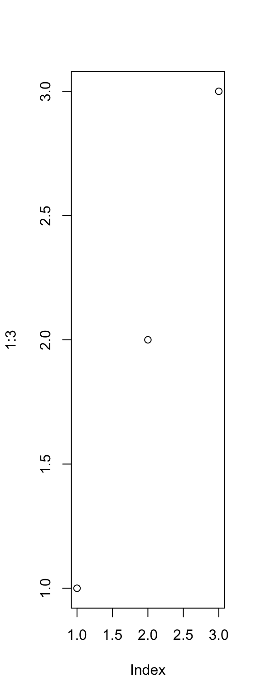
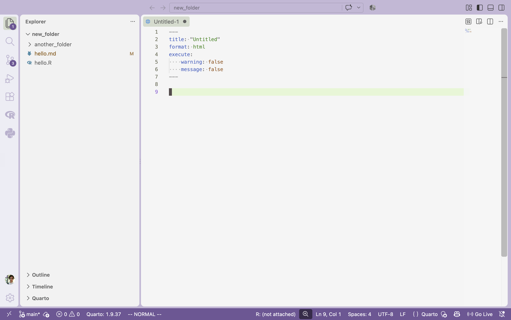

```{r}
x <- c(1, 2, 3)
```Workspace Setup
This note won’t be tested on the exam but prepares you for running in-class exercises and solving homework problems.
This note describes the development environment we’ll use throughout the class. By the end, you should be able to
- Navigate a modern code editor.
- Use quarto notebooks to combine code, visualizations, and commentary.
- Run the pi coding agent to create a ggplot2 visualization.
- Check that your code notebooks are formatted properly for submission.
Before we get started, please make sure to the install quarto and pi. The instructions below describe how to do this for different operating systems.
Code Editors
- We will create visualizations in a programming language. This is different from creating visualizations in software like Excel, Power BI, or Tableau, because our visualizations will be defined by writing code rather than interacting with a GUI (clicking buttons, selecting from dropdown menus, etc.).
Contrast the excel approach,
With the coded version,
Since programming is all done by editing text files, it helps to have efficient ways to navigate, type in, and monitoring changes to text files. This is what modern code editors support. This note describes vscode, but Rstudio and positron are similar (and I’m happy to go over that one-on-one).
To open an existing folder, go to “File > Open Folder.” This will make the editor aware of all the files in that folder.
You can navigate all the files in a project using the stack-of-paper icon at the top left of the editor. If you have directories, clicking on them will expand all the files within. You can also create new files and directories by right-clicking in this space
- We’ll mainly work with quarto files (described in detail below). These files have boilerplate text that is always present, and it’s tedious to copy each time. Instead, you can type
Ctrl + Shift + p(windows) orCmd + Shift + p(mac) to bring up the “Command Palette,” where you can create a quarto file with the boilerplate in place1
Modern code editors have built-in support for
git, a program for checkpointing progress in your code projects. It’s essentially “track changes” for code. It’s helpful because,- It keeps you from accidentally losing your work.
- When using AI agents, it clearly highlights the changes they make.
Describing everything git can do is beyond the scope of this course (and I believe it’s taught in the introductory R courses). But for our purposes, it’s enough to know that you can initialize a repository in a folder.
Commit a change, which acts like a checkpoint for your later review.
And track any changes since the last commit.
- It’s not as important, but know that you can customize your editor. You can change the panel layout, the color themes2, even the fonts. There are also extensions (blocks icon on the left) give even more options.
Quarto Notebooks
- Literate programming is the idea that code from a programming language can be embedded within a documentation language. This places the emphasis back on why we are writing the code, what exactly we’re meant to learn from or accomplish with it.
The main idea is to treat a program as a piece of literature, addressed to human beings rather than to a computer.
– Donald Knuth, Literate Programming
Quarto is an implementation of literate programming that’s well suited to data visualization. It supports R, python, and javascript, and those code blocks are embedded within the markdown. Python is helpful for the machine learning visualization topics at the end of the course, and javascript will help us make interactive plots, but the only prior experience we assume is with R.
If you are using vscode, to install the quarto extension so you can run code without leaving the editor. If you use Rstudio, quarto is supported by default.
- You can create a code block with three backticks and the name of the language. This is what an R code block looks like,
These are the equivalents in python and javascript.
```{python}
x = [1, 2, 3]
``````{ojs}
//| echo: fenced
x = [1, 2, 3] // js arrays are written the same way as python
```- You can set options within each block. They won’t appear in the rendered document but control how the output looks. For example, you can name your chunks, which helps debugging.
```{r}
#| label: my-label
x <- c(1, 2, 3)
```One trick that’s worth knowing for our course – you can resize figures and write captions this way.
```{r}
#| fig-width: 6
#| fig-height: 3.5
#| fig-cap: Here is a caption.
plot(1:3)
```
Contrast that with,
```{r}
#| fig-width: 3
#| fig-height: 8
#| fig-cap: Here is a caption.
plot(1:3)
```
- Sometimes code prints many messages that clutter the document.
```{r}
library(tidyverse)
```── Attaching core tidyverse packages ──────────────────────── tidyverse 2.0.0 ──
✔ dplyr 1.2.1 ✔ readr 2.2.0
✔ forcats 1.0.1 ✔ stringr 1.6.0
✔ ggplot2 4.0.3 ✔ tibble 3.3.1
✔ lubridate 1.9.5 ✔ tidyr 1.3.2
✔ purrr 1.2.2
── Conflicts ────────────────────────────────────────── tidyverse_conflicts() ──
✖ dplyr::filter() masks stats::filter()
✖ dplyr::lag() masks stats::lag()
ℹ Use the conflicted package (<http://conflicted.r-lib.org/>) to force all conflicts to become errorsTo keep things clean, I set the message and warning code chunk options to false.
```{r}
#| message: false
#| warning: false
library(tidyverse)
```- Copying these options to every chunk is tedious. Instead, you can set the metadata at the top of the document so that they will apply to every chunk below.

- To render a document, open the command palette and enter
Quarto Preview. You can also render from terminal withquarto preview your-document.qmd.
- A common pitfall is that if you move the rendered HTML document outside its original folder, the figures won’t render. For example, if we move the previous document to a new folder, we’ll see this.
- To fix this, add
self-contained: trueto the file header. This embeds all images and styling embedded directly in the HTML.
Agentic Coding
Coding agents are programs that you call from your command line that can edit and run other programs. Unlike typing prompts into a web interface, they can draw on more context and run checks locally on your machine.
These tools can help with visualization, especially if you think carefully through what you are trying to accomplish, have built a working vocabulary for technical concepts, and can review the intermediate output critically.
In this class, I’ll ask you to use the Pi agent for all the work you submit. This gives everyone access to the same models, which keeps things fair. It’s also open source and works with with many underlying models. The best models will keep changing, and a single platform that interfaces with all of them will make sure that your skills remain relevant.
You can run pi from the terminal. In the recording below, I’ve use a free model to add a new histogram of random numbers. Notice how I used the
@symbol to refer to a file. This guides the model to the context that it needs. Here it specifies the file we want to edit, but it can point to anything that helps solve the task, like related files or documentation. A minor point – at the start, I moved my terminal panel to the right. This is not necessary, I just did it so we can see more output.
- At the end of that recording, I use the
/exportcommand to save the session. The result is a plain HTML file I could share with anyone interested in the prompts or intermediate outputs.
When you finish a task and want to move on to another, you can use
/clearto clear the context from all interactions so far. This keeps earlier interactions from inadvertently influencing the next set of edits.Another important Pi command is
/model. This lets you switch between models. The example in the video above is simple enough for a free model. For slightly more complex tasks, even a very cheap model is often preferable.I will give you an OpenRouter API key with access to a a few models. Please use it class assignments. Once you have the key, add it to Pi with the steps in the video below.